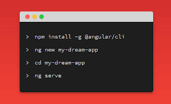

Instalación de Angular
Para instalar Angular, sigue estos pasos básicos:
1. Instalar Node.js
Angular requiere Node.js y npm (Node Package Manager). Descarga e instala la última versión de Node.js desde nodejs.org.
2. Instalar Angular CLI
Una vez que tengas Node.js, abre la terminal (o línea de comandos) y ejecuta el siguiente comando para instalar Angular CLI (la herramienta de línea de comandos de Angular):
npm install -g @angular/cli3. Crear un nuevo proyecto Angular
Después de instalar Angular CLI, crea un nuevo proyecto con el siguiente comando:
ng new nombre-del-proyectoEste comando creará un directorio con el nombre del proyecto y configurará la estructura básica de una aplicación Angular.
4. Ejecutar la aplicación
Navega al directorio de tu proyecto e inicia el servidor de desarrollo:
cd nombre-del-proyectong serveEsto iniciará un servidor local y podrás ver tu aplicación accediendo a http://localhost:4200 en tu navegador.
¡Y listo! Ya tienes Angular instalado y funcionando.
